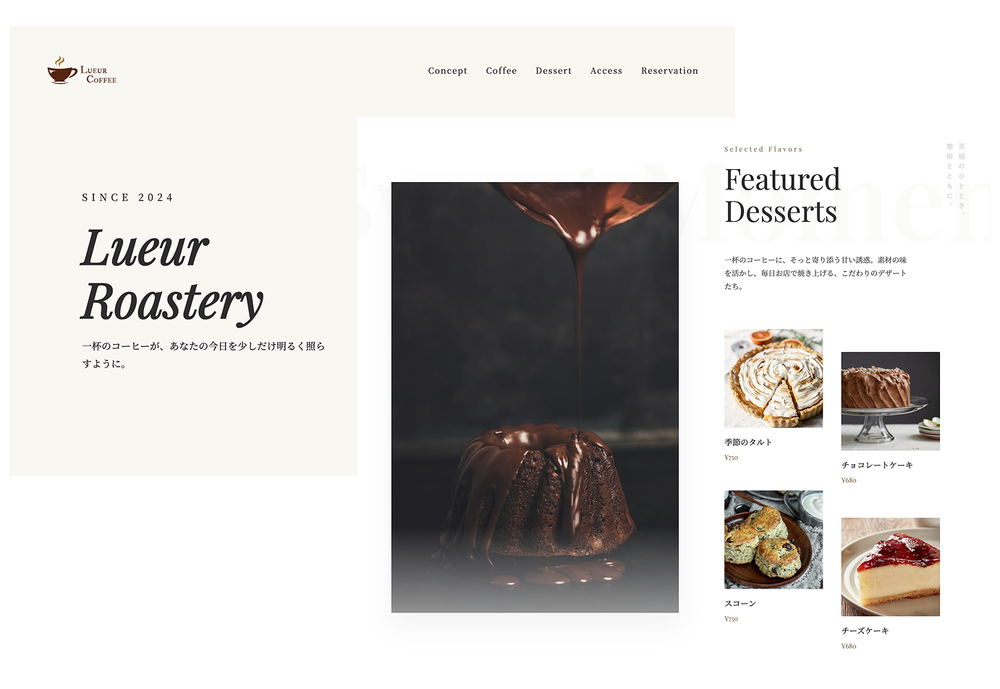
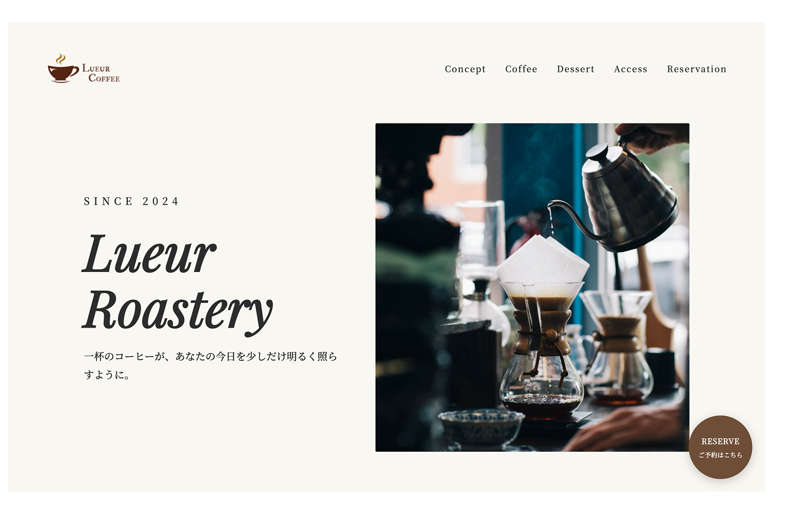
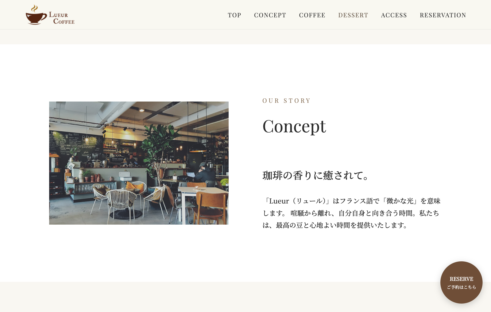
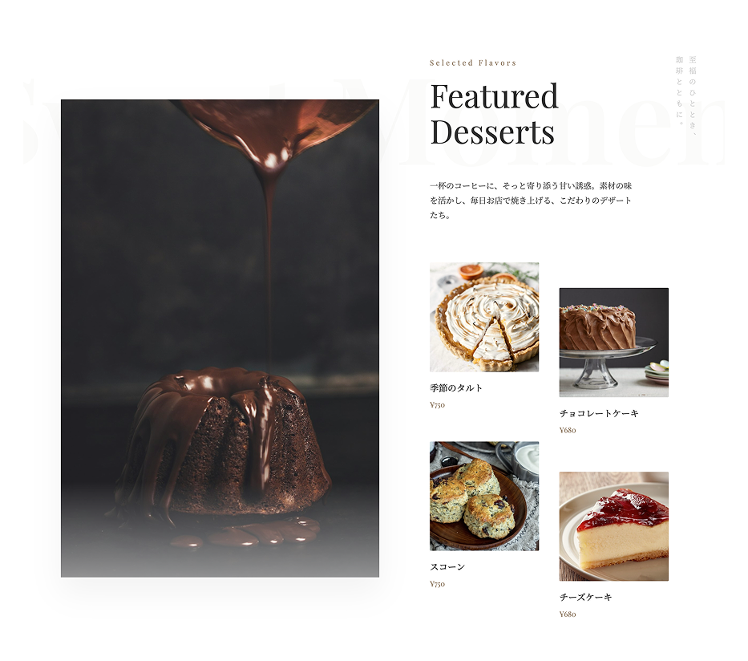

架空のカフェサイト
「Lueur」
一杯のコーヒーが、あなたの今日を少しだけ明るく照らすように。 心地よい空間と、最高の一杯。そして、美味しいデザートを提供する 架空カフェ「Lueur Coffee」のHPです。
Story
1. 世界観の提示
店内の空気感や「光」の入り方など、言葉では伝えきれない「美意識」を視覚的に伝え、同じ感性を持つ客層を呼び込みたい。
2. 期待値の管理
静かに珈琲を楽しむ場所」であることを、HPのデザイン（余白やフォント）を通じて暗黙のうちに伝え、ミスマッチを防ぎたい。
3. スマートな予約
「予約して行く」という行為自体を、特別な体験の始まり（エントランス）として演出し、店頭での待ち時間をなくしたい。
Key Features
ファーストビュー
このファーストビューは、オフホワイトの背景に深い色調の写真を対比させたアシンメトリーな構成をとることで、洗練された都会的な静寂を表現しています。
キャッチコピーの「一杯のコーヒーが、あなたの今日を少しだけ明るく照らすように。」という言葉を、余白を贅沢に使うことでユーザーの心に残す意図があります。
右下に配置された円形の「RESERVE」ボタンは、画面全体の直線的な構造の中で唯一の曲線要素として視線を惹きつけつつ、落ち着いたブラウンの配色にすることで、おしゃれな世界観を損なうことなくスムーズな予約へと導く、機能的かつ情緒的な設計となっています。

コンセプトセクション
このセクションは、あえて装飾を排した広大な余白（ホワイトスペース）の中に、店内の空気感を伝える写真とテキストを並列させることで、ブランドの誠実さと「心のゆとり」を表現しています。
ファーストビューで感じさせた「光」が具体的にどのような場所で体験できるのかを視覚的に裏付ける役割を果たしています。
全体のレイアウトはファーストビューの「左テキスト・右画像」という流れを反転させた「左画像・右テキスト」の構成になっており、スクロールするユーザーの視線にリズムを与えながら、自然に読み進めさせる設計になっています。

メニューセクション
左側に配置されたダイナミックな縦長の写真と、右側の整然としたグリッドレイアウトを対比させることで、視覚的なインパクトと情報の読みやすさを両立させています。
左側の大きなメインビジュアルは、ユーザーの聴覚や味覚を刺激してデザートへの期待感を
一気に高める役割を担っています。
写真はすべて彩度を抑えた落ち着いたトーンで統一されており、
それぞれのメニュー名と価格を控えめなゴシック体で添えることで、
高級感を損なわずに価格を伝える実用性も備えています。
さらに、セクションの右端に縦書きで配置された「至福のひととき、珈琲とともに。」というメッセージは、
視線の流れに変化をつけ、単なるデザートの紹介に留まらない「珈琲とのペアリング体験」という
ストーリーを補完する洗練されたアクセントとして機能しています。
